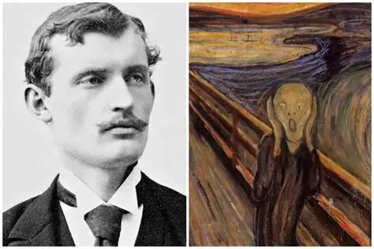
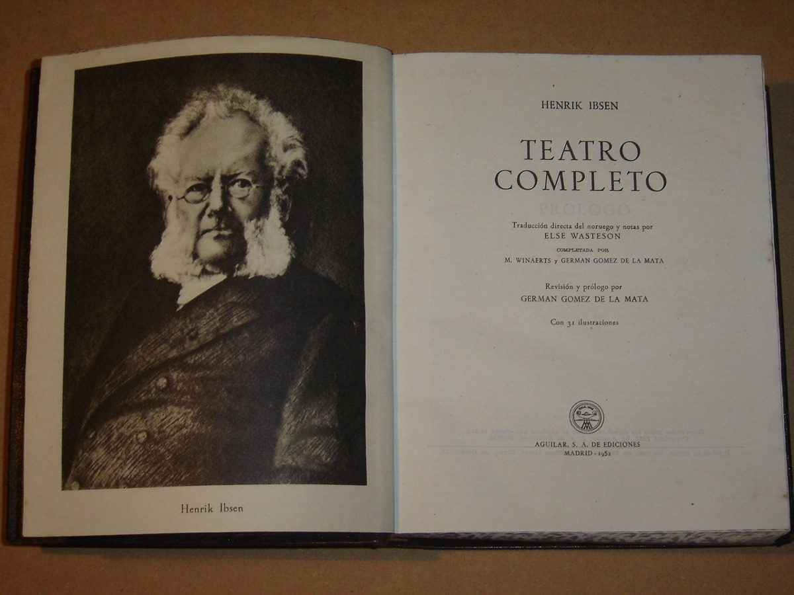
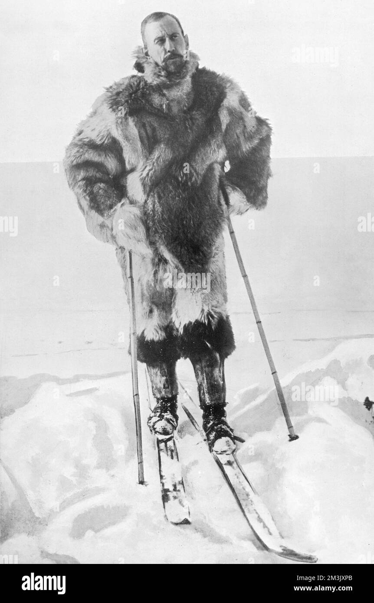

Norway famous persons |
|||||
| Home | Gastronomy | Sports | Famous People | Famous Landmarks | |
| Form | |||||
It has given the world numerous famous figures who have left their mark on culture, politics, sports, and art. From legendary explorers and influential writers to international musicians and elite athletes, Norwegians have achieved global recognition. |
|||||
Erling Haaland |
Edvard Munch | Henrik Ibsen | Roald Amundsen | A-ha | Aurora |
|  |  |  | |||
| Considered one of the best players in the world, and the greatest Norwegian player ever, he is known for his speed, strength, positioning, and finishing. | The scream has become one of the most iconic and acclaimed images in all of Western art. | He is considered the most important Norwegian playwright and one of the authors who has most influenced modern drama, the father of modern realist drama and a precursor of symbolic theater. | Was a Norwegian explorer of polar regions. He was a key figure of the period known as the Heroic Age of Antarctic | Are a Norwegian synth-pop band formed in Oslo | is a Norwegian singer, songwriter and record producer. Born in Stavanger and raised in Høle and Os |
copyright norway famous persons© |
|||||